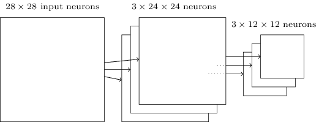

接下来介绍一种非常重要的神经网络——卷积神经网络。这种神经网络在计算机视觉领域取得了重大的成功，而且在自然语言处理等其它领域也有很好的应用。深度学习受到大家的关注很大一个原因就是Alex等人实现的AlexNet（一种深度卷积神经网络）在LSVRC-2010 ImageNet这个比赛中取得了非常好的成绩。此后，卷积神经网络及其变种被广泛应用于各种图像相关任务。
这里主要参考了http://neuralnetworksanddeeplearning.com /chap6.html和cs231n的课程来介绍CNN，两部分都会有理论和代码。前者会用theano来实现，而后者会使用我们前一部分介绍的自动梯度来实现。下面首先介绍Michael Nielsen的部分（其实主要是翻译，然后加一些我自己的理解）
如果读者自己尝试了上一部分的代码，调过3层和5层全连接的神经网络的参数，我们会发现神经网络的层数越多，参数（超参数）就越难调。但是如果参数调得好，深的网络的效果确实比较浅的好（这也是为什么我们要搞深度学习的原因）。所以深度学习有这样的说法：“三个 bound 不如一个 heuristic，三个 heuristic 不如一个trick”。以前搞机器学习就是feature engineering加调参，现在就剩下调参了。网络的结构，参数的初始化，learning_rate，迭代次数等等都会影响最终的结果。有兴趣的同学可以看看Michael Nielsen这个电子书的相应章节，cs231n的http://cs231n.github.io/neural-networks-3/#baby也有介绍，另外《Neural Networks: Tricks of the Trade》这本书，看名字就知道讲啥的了吧。
不过我们还是回到正题“卷积神经网络”吧。
在之前的章节我们使用了神经网络来解决手写数字识别(MNIST)的问题。我们使用了全连接的神经网络，也就是前一层的每一个神经元都会连接到后一层的每一个神经元，如果前一层有m个节点，后一层有n个，那么总共有m*n条边(连接)。连接方式如下图所示：
具体来讲，对于输入图片的每一个像素，我们把它的灰度值作为对应神经元的输入。对于28×28的图像来说，我们的网络有784个输入神经元。然后我们训练这个网络的weights和biases来使得它可以正确的预测对应的数字。
我们之前设计的神经网络工作的很好：在MNIST手写识别数据集上我们得到了超过98%的准确率。但是仔细想一想的话，使用全连接的网络来识别图像有一些奇怪。因为这样的网络结构没有考虑图像的空间结构。比如，它对于空间上很近或者很远的像素一样的对待。这些空间的概念【比如7字会出现某些像素在某个水平方向同时灰度值差不多，也就是上面的那一横】必须靠网络从训练数据中推测出来【但是如果训练数据不够而且图像没有做居中等归一化的话，如果训练数据的7的一横都出现在图像靠左的地方，而测试数据把7写到右下角，那么网络很可能学不到这样的特征】。那为什么我们不能设计一直网络结构考虑这些空间结构呢？这样的想法就是下面我们要讨论的CNN的思想。
这种神经网络利用了空间结构，因此非常适合用来做图片分类。这种结构训练也非常的快，因此也可以训练更“深”的网络。目前，图像识别大都使用深层的卷积神经网络及其变种。
卷积神经网络有3个基本的idea：局部感知域(Local Recpetive Field)，权值共享和池化(Pooling)。下面我们来一个一个的介绍它们。
In the fully-connected layers shown earlier, the inputs were depicted as a vertical line of neurons. In a convolutional net, it’ll help to think instead of the inputs as a 28×28 square of neurons, whose values correspond to the 28×28 pixel intensities we’re using as inputs:
在前面图示的全连接的层里，输入是被描述成一列神经元。而在卷积网络里，我们把输入看成28×28方格的二维神经元，它的每一个神经元对应于图片在这个像素点的强度（灰度值），如下图所示：

和往常一样，我们把输入像素连接到隐藏层的神经元。但是我们这里不再把输入的每一个像素都连接到隐藏层的每一个神经元。与之不同，我们把很小的相临近的区域内的输入连接在一起。
更加具体的来讲，隐藏层的每一个神经元都会与输入层一个很小的区域（比如一个5×5的区域，也就是25个像素点）相连接。隐藏对于隐藏层的某一个神经元，连接如下图所示：

输入图像的这个区域叫做那个隐藏层神经元的局部感知域。这是输入像素的一个小窗口。每个连接都有一个可以学习的权重，此外还有一个bias。你可以把那个神经元想象成用来分析这个局部感知域的。
我们然后在整个输入图像上滑动这个局部感知域。对于每一个局部感知域，都有一个隐藏层的神经元与之对应。为了具体一点的展示，我们首先从最左上角的局部感知域开始：

然后我们向右滑动这个局部感知域：

以此类推，我们可以构建出第一个隐藏层。注意，如果我们的输入是28×28，并且使用5×5的局部关注域，那么隐藏层是24×24。因为我们只能向右和向下移动23个像素，再往下移动就会移出图像的边界了。【说明，后面我们会介绍padding和striding，从而让图像在经过这样一次卷积处理后尺寸可以不变小】
这里我们展示了一次向右/下移动一个像素。事实上，我们也可以使用一次移动不止一个像素【这个移动的值叫stride】。比如，我们可以一次向右/下移动两个像素。在这篇文章里，我们只使用stride为1来实验，但是请读者知道其他人可能会用不同的stride值。
Shared weights and biases: I’ve said that each hidden neuron has a bias and 5×5 weights connected to its local receptive field. What I did not yet mention is that we’re going to use the same weights and bias for each of the 24×24 hidden neurons. In other words, for the j,kth hidden neuron, the output is:
之前提到过每一个隐藏层的神经元有一个5×5的权值。这24×24个隐藏层对应的权值是相同的。也就是说，对于隐藏层的第j,k个神经元，输出如下：
这里，σ是激活函数，可以是我们之前提到的sigmoid函数。b是共享的bias，
【从这个公式可以看出，权值是5×5的矩阵，不同的局部感知域使用这一个参数矩阵和bias】
这意味着这一个隐藏层的所有神经元都是检测同一个特征，只不过它们位于图片的不同位置而已。比如这组weights和bias是某个局部感知域学到的用来识别一个垂直的边。那么预测的时候不管这条边在哪个位置，它都会被某个对于的局部感知域检测到。更抽象一点，卷积网络能很好的适应图片的位置变化：把图片中的猫稍微移动一下位置，它仍然知道这是一只猫。
因为这个原因，我们有时把输入层到隐藏层的映射叫做特征映射(feature map)。我们把定义特征映射的权重叫做共享的权重(shared weights)，bias叫做共享的bias(shared bais)。这组weights和bias定义了一个kernel或者filter。
上面描述的网络结构只能检测一种局部的特征。为了识别图片，我们需要更多的特征映射。隐藏一个完整的卷积神经网络会有很多不同的特征映射：

在上面的例子里，我们有3个特征映射。每个映射由一个5×5的weights和一个biase确定。因此这个网络能检测3种特征，不管这3个特征出现在图像的那个局部感知域里。
为了简化，上面之展示了3个特征映射。在实际使用的卷积神经网络中我们会使用非常多的特征映射。早期的一个卷积神经网络——LeNet-5，使用了6个特征映射，每一个都是5×5的局部感知域，来识别MNIST数字。因此上面的例子和LeNet-5很接近。后面我们开发的卷积层将使用20和40个特征映射。下面我们先看看模型学习到的一些特征：

这20个图片对应了20个不同的特征映射。每个映射是一个5×5的图像，对应于局部感知域的5×5个权重。颜色越白(浅)说明权值越小(一般都是负的)，因此对应像素对于识别这个特征越不重要。颜色越深(黑)说明权值越大，对应的像素越重要。
那么我们可以从这些特征映射里得出什么结论呢？很显然这里包含了非随机的空间结构。这说明我们的网络学到了一些空间结构。但是，也很难说它具体学到了哪些特征。我们学到的不是一个 Gabor滤波器 的。事实上有很多研究工作尝试理解机器到底学到了什么样的特征。如果你感兴趣，可以参考Matthew Zeiler 和 Rob Fergus在2013年的论文 Visualizing and Understanding Convolutional Networks
共享权重和bias的一大好处是它极大的减少了网络的参数数量。对于每一个特征映射，我们只需要 25=5×5 个权重，再家一个bias。因此一个特征映射只有26个参数。如果我们有20个特征映射，那么只有20×26=520个参数。如果我们使用全连接的神经网络结构，假设隐藏层有30个神经元(这并不算很多)，那么就有784*30个权重参数，再加上30个bias，总共有23,550个参数。换句话说，全连接的网络比卷积网络的参数多了40倍。
当然，我们不能直接比较两种网络的参数，因为这两种模型有本质的区别。但是，凭直觉，由于卷积网络有平移不变的特性，为了达到相同的效果，它也可能使用更少的参数。由于参数变少，卷积网络的训练速度也更快，从而相同的计算资源我们可以训练更深的网络。
“卷积”神经网络是因为公式(1)里的运算叫做“卷积运算”。更加具体一点，我们可以把公式(1)里的求和写成卷积：
除了上面的卷积层，卷积神经网络也包括池化层(pooling layers)。池化层一般都直接放在卷积层后面池化层的目的是简化从卷积层输出的信息。
更具体一点，一个池化层把卷积层的输出作为其输入并且输出一个更紧凑(condensed)的特征映射。比如，池化层的每一个神经元都提取了之前那个卷积层的一个2×2区域的信息。更为具体的一个例子，一种非常常见的池化操作叫做Max-pooling。在Max-Pooling中，这个神经元选择2×2区域里激活值最大的值，如下图所示：

注意卷积层的输出是24×24的，而池化后是12×12的。
就像上面提到的，卷积层通常会有多个特征映射。我们会对每一个特征映射进行max-pooling操作。因此，如果一个卷积层有3个特征映射，那么卷积加max-pooling后就如下图所示：

我们可以把max-pooling看成神经网络关心某个特征在这个区域里是否出现。它忽略了这个特征出现的具体位置。直觉上看，如果某个特征出现了，那么这个特征相对于其它特征的精确位置是不重要的【精确位置不重要，但是大致的位置是重要的，比如识别一个猫，两只眼睛和鼻子有一个大致的相对位置关系，但是在一个2×2的小区域里稍微移动一下眼睛，应该不太影响我们识别一只猫，而且它还能解决图像拍摄角度变化，扭曲等问题】。而且一个很大的好处是池化可以减少特征的个数【2×2的max-pooling让特征的大小变为原来的1/4】，因此减少了之后层的参数个数。
Max-pooling不是唯一的池化方法。另外一种常见的是L2 Pooling。这种方法不是取2×2区域的最大值，而是2×2区域的每个值平方然后求和然后取平方根。虽然细节有所不同，但思路和max-pooling是类似的：L2 Pooling也是从卷积层压缩信息的一种方法。在实践中，两种方法都被广泛使用。有时人们也使用其它的池化方法。如果你真的想尝试不同的方法来提供性能，那么你可以使用validation数据来尝试不同池化方法然后选择最合适的方法。但是这里我们不在讨论这些细节。【Max-Pooling是用的最多的，甚至也有人认为Pooling并没有什么卵用。深度学习一个问题就是很多经验的tricks由于没有太多理论依据，只是因为最早的人用了，而且看起来效果不错（但可能换一个数据集就不一定了），所以后面的人也跟着用。但是过了没多久又被认为这个trick其实没啥用】
现在我们可以把这3个idea放到一起来构建一个完整的卷积神经网络了。它和之前我们看到的结构类似，不过增加了一个有10个神经元的输出层，这个层的每个神经元对应于0-9直接的一个数字：

这个网络的输入的大小是28×28，每一个输入对于MNIST图像的一个像素。然后使用了3个特征映射，局部感知域的大小是5×5。这样得到3×24×24的输出。然后使用对每一个特征映射的输出应用2×2的max-pooling，得到3×12×12的输出。
最后一层是全连接的网络，3×12×12个神经元会连接到输出10个神经元中的每一个。这和之前介绍的全连接神经网络是一样的。
卷积结构和之前的全连接结构有很大的差别。但是整体的图景是类似的：一个神经网络有很多神经元，它们的行为有weights和biase确定。并且整体的目标也是类似的：使用训练数据来训练网络的weights和biases使得网络能够尽量好的识别图片。
和之前介绍的一样，这里我们仍然使用随机梯度下降来训练。不过反向传播算法有所不同。原因是之前bp算法的推导是基于全连接的神经网络。不过幸运的是求卷积和max-pooling的导数是非常简单的。如果你想了解细节，请自己推导。【这篇文章不会介绍CNN的梯度求解，后面实现使用的是theano，后面介绍CS231N的CNN是会介绍怎么自己来基于自动求导来求这个梯度，而且还会介绍高效的算法，感兴趣的读者请持续关注】
前面我们介绍了CNN的基本理论，但是没有讲怎么求梯度。这里的代码是用theano来自动求梯度的。我们可以暂时把cnn看出一个黑盒，试试用它来识别MNIST的数字。后面的文章会介绍theano以及怎么用theano实现CNN。
首先得到代码：
git clone
https://github.com/mnielsen/neural-networks-and-deep-learning.git
参考
http://deeplearning.net/software/theano/install.html
如果是ubuntu的系统，可以参考
http://deeplearning.net/software/theano/install_ubuntu.html#install-ubuntu
如果您的机器有gpu，请安装好cuda以及让theano支持gpu
默认的network3.py的第52行是 GPU = True，如果您的机器没有gpu，请把这一行改成GPU = False
首先我们实现一个baseline的系统，我们构建一个只有一个隐藏层的3层全连接网络，隐藏层100个神经元。我们训练时60个epoch，使用learning rate
$cd src
$ipython
>>> import network3
>>> from network3 import Network
>>> from network3 import ConvPoolLayer, FullyConnectedLayer, SoftmaxLayer
>>> training_data, validation_data, test_data = network3.load_data_shared()
>>> mini_batch_size = 10
>>> net = Network([
FullyConnectedLayer(n_in=784, n_out=100),
SoftmaxLayer(n_in=100, n_out=10)], mini_batch_size)
>>> net.SGD(training_data, 60, mini_batch_size, 0.1,
validation_data, test_data)
得到的分类准确率是97.8%。这是在test_data上的准确率，这个模型使用训练数据训练，并根据validation_data来选择当前最好的模型。使用validation数据来可以避免过拟合。读者运行时可能结果会有一些差异，因为模型的参数是随机初始化的。
Let’s begin by inserting a convolutional layer, right at the beginning of the network. We’ll use 5 by 5 local receptive fields, a stride length of 1, and 20 feature maps. We’ll also insert a max-pooling layer, which combines the features using 2 by 2 pooling windows. So the overall network architecture looks much like the architecture discussed in the last section, but with an extra fully-connected layer
我们首先在输入的后面增加一个卷积层。我们使用5
5的局部感知域，stride等于1，20个特征映射。然后接一个2
2的max-pooling层。之后接一个全连接的层，最后是softmax（仿射变换加softmax）：

在这种网络结构中，我们可以认为卷积和池化层可以学会输入图片的局部的空间特征，而全连接的层整合全局的信息，学习出更抽象的特征。这是卷积神经网络的常见结构。
下面是代码：
>>> net = Network([
ConvPoolLayer(image_shape=(mini_batch_size, 1, 28, 28),
filter_shape=(20, 1, 5, 5),
poolsize=(2, 2)),
FullyConnectedLayer(n_in=20*12*12, n_out=100),
SoftmaxLayer(n_in=100, n_out=10)], mini_batch_size)
>>> net.SGD(training_data, 60, mini_batch_size, 0.1,
validation_data, test_data)
【注意图片的大小，开始是(mini_batch_size, 1, 28 ,28)，经过一个20个5
5的卷积池层后变成了(mini_batch_size, 20, 24,24)，然后在经过2
2的max-pooling后变成了(mini_batch_size, 20, 12, 12)，然后接全连接层的时候可以理解成把所以的特征映射展开，也就是20
12
12，所以FullyConnectedLayer的n_in是20
12
12】
这个模型得到98.78%的准确率，这相对之前的97.8%是一个很大的提高。事实上我们的错误率减少了1/3，这是一个很大的提高。【准确率很高的时候就看错误率的减少，这样比较有成就感，哈哈】
如果要用gpu，可以把上面的命令保存到一个文件test.py，然后:
$THEANO_FLAGS=mode=FAST_RUN,device=gpu,floatX=float32 python test.py
在这个网络结构中，我们吧卷积和池化层看出一个整体。这只是一种习惯。network3.py会把它们当成一个整体，每个卷积层后面都会跟一个池化层。但实际的一些卷积神经网络并不都要接池化层。
我们再加入第二个卷积-池化层。这个卷积层插入在第一个卷积层和全连接层中间。我们使用同样的5×5的局部感知域和2×2的max-pooling。代码如下：
>>> net = Network([
ConvPoolLayer(image_shape=(mini_batch_size, 1, 28, 28),
filter_shape=(20, 1, 5, 5),
poolsize=(2, 2)),
ConvPoolLayer(image_shape=(mini_batch_size, 20, 12, 12),
filter_shape=(40, 20, 5, 5),
poolsize=(2, 2)),
FullyConnectedLayer(n_in=40*4*4, n_out=100),
SoftmaxLayer(n_in=100, n_out=10)], mini_batch_size)
>>> net.SGD(training_data, 60, mini_batch_size, 0.1,
validation_data, test_data)
【注意图片的大小，开始是(mini_batch_size, 1, 28 ,28)，经过一个20个5
5的卷积池层后变成了(mini_batch_size, 20, 24,24)，然后在经过2
2的max-pooling后变成了(mini_batch_size, 20, 12, 12)。然后是40个5*5的卷积层，变成了(mini_batch_size, 40, 8, 8)，然后是max-pooling得到(mini_batch_size, 40, 4, 4)。然后是全连接的层】
这个模型得到99.6%的准确率！
这里有两个很自然的问题。第一个是：加第二个卷积-池化层有什么意义呢？事实上，你可以认为第二个卷积层的输入是12*12的”图片“，它的”像素“代表某个局部特征。【比如你可以认为第一个卷积层识别眼睛鼻子，而第二个卷积层识别脸，不同生物的脸上面鼻子和眼睛的相对位置是有意义的】
这是个看起来不错的解释，那么第二个问题来了：第一个卷积层的输出是不同的20个不同的局部特征，因此第二个卷积层的输入是20 12 12。这就像我们输入了20个不同的”图片“，而不是一个”图片“。那第二个卷积层的神经元学到的是什么呢？【如果第一层的卷积网络能识别”眼睛“，”鼻子“，”耳朵“。那么第二层的”脸“就是2个眼睛，2个耳朵，1个鼻子，并且它们满足一定的空间约束。所以第二层的每一个神经元需要连接第一层的每一个输出，如果第二层只连接”眼睛“这个特征映射，那么只能学习出2个眼睛，3个眼睛这样的特征，那就没有什么用处了】
使用ReLU激活函数。ReLU的定义是：
>>> from network3 import ReLU
>>> net = Network([
ConvPoolLayer(image_shape=(mini_batch_size, 1, 28, 28),
filter_shape=(20, 1, 5, 5),
poolsize=(2, 2),
activation_fn=ReLU),
ConvPoolLayer(image_shape=(mini_batch_size, 20, 12, 12),
filter_shape=(40, 20, 5, 5),
poolsize=(2, 2),
activation_fn=ReLU),
FullyConnectedLayer(n_in=40*4*4, n_out=100, activation_fn=ReLU),
SoftmaxLayer(n_in=100, n_out=10)], mini_batch_size)
>>> net.SGD(training_data, 60, mini_batch_size, 0.03,
validation_data, test_data, lmbda=0.1)
使用ReLU后准确率从99.06%提高到99.23%。从作者的经验来看，ReLU总是要比sigmoid激活函数要好。
但为什么ReLU就比sigmoid或者tanh要好呢？目前并没有很好的理论介绍。ReLU只是在最近几年开始流行起来的。为什么流行的原因是经验：有一些人尝试了ReLU，然后在他们的任务里取得了比sigmoid好的结果，然后其他人也就跟风。理论上没有人证明ReLU是更好的激活函数。【所以说深度学习有很多tricks，可能某几年就流行起来了，但过几年又有人认为这些tricks没有意义。比如最早的pretraining，现在几乎没人用了。】
扩展数据。
深度学习非常依赖于数据。我们可以根据任务的特点”构造“新的数据。一种简单的方法是把训练数据里的数字进行一下平移，旋转等变换。虽然理论上卷积神经网络能学到与位置无关的特征，但如果训练数据里数字总是出现在固定的位置，实际的模型也不一定能学到。所以我们构造一些这样的数据效果会更好。
$ python expand_mnist.py
expand_mnist.py这个脚本就会扩展数据。它只是简单的把图片向上下左右各移动了一个像素。扩展后训练数据从50000个变成了250000个
接下来我们用扩展后的数据来训练模型：
>>> expanded_training_data, _, _ = network3.load_data_shared(
"../data/mnist_expanded.pkl.gz")
>>> net = Network([
ConvPoolLayer(image_shape=(mini_batch_size, 1, 28, 28),
filter_shape=(20, 1, 5, 5),
poolsize=(2, 2),
activation_fn=ReLU),
ConvPoolLayer(image_shape=(mini_batch_size, 20, 12, 12),
filter_shape=(40, 20, 5, 5),
poolsize=(2, 2),
activation_fn=ReLU),
FullyConnectedLayer(n_in=40*4*4, n_out=100, activation_fn=ReLU),
SoftmaxLayer(n_in=100, n_out=10)], mini_batch_size)
>>> net.SGD(expanded_training_data, 60, mini_batch_size, 0.03,
validation_data, test_data, lmbda=0.1)
这个模型的准确率是99.37%。扩展数据看起来非常trival，但是却极大的提高了识别准确率。
接下来还有改进的办法吗？我们的全连接层只有100个神经元，增加神经元有帮助吗？ 作者尝试了300和1000个神经元的全连接层，得到了99.46%和99.43%的准确率。相对于99.37%并没有本质的提高。
那再加一个全连接的层有帮助吗？我们了尝试一下：
>>> net = Network([
ConvPoolLayer(image_shape=(mini_batch_size, 1, 28, 28),
filter_shape=(20, 1, 5, 5),
poolsize=(2, 2),
activation_fn=ReLU),
ConvPoolLayer(image_shape=(mini_batch_size, 20, 12, 12),
filter_shape=(40, 20, 5, 5),
poolsize=(2, 2),
activation_fn=ReLU),
FullyConnectedLayer(n_in=40*4*4, n_out=100, activation_fn=ReLU),
FullyConnectedLayer(n_in=100, n_out=100, activation_fn=ReLU),
SoftmaxLayer(n_in=100, n_out=10)], mini_batch_size)
>>> net.SGD(expanded_training_data, 60, mini_batch_size, 0.03,
validation_data, test_data, lmbda=0.1)
在第一个全连接的层之后有加了一个100个神经元的全连接层。得到的准确率是99.43%，把这一层的神经元个数从100增加到300个和1000个得到的准确率是99.48 %和99.47%。有一些提高但是也不明显。
为什么增加更多层提高不多呢，按说它的表达能力变强了，可能的原因是过拟合。那怎么解决过拟合呢？一种方法就是dropout。drop的详细解释请参考http://neuralnetworksanddeeplearning.com
/chap3.html#other_techniques_for_regularization。简单来说，dropout就是在训练的时候随机的让一些神经元的激活”丢失“，这样网络就能学到更加鲁棒的特征，因为它要求某些神经元”失效“的情况下网络仍然能工作，因此就不会那么依赖某一些神经元，而是每个神经元都有贡献。
下面是在两个全连接层都加入50%的dropout
>>> net = Network([
ConvPoolLayer(image_shape=(mini_batch_size, 1, 28, 28),
filter_shape=(20, 1, 5, 5),
poolsize=(2, 2),
activation_fn=ReLU),
ConvPoolLayer(image_shape=(mini_batch_size, 20, 12, 12),
filter_shape=(40, 20, 5, 5),
poolsize=(2, 2),
activation_fn=ReLU),
FullyConnectedLayer(
n_in=40*4*4, n_out=1000, activation_fn=ReLU, p_dropout=0.5),
FullyConnectedLayer(
n_in=1000, n_out=1000, activation_fn=ReLU, p_dropout=0.5),
SoftmaxLayer(n_in=1000, n_out=10, p_dropout=0.5)],
mini_batch_size)
>>> net.SGD(expanded_training_data, 40, mini_batch_size, 0.03,
validation_data, test_data)
使用dropout后，我们得到了99.60%的一个模型。
这里有两点值得注意。
第一就是训练的epoch变成了40.因为dropout减少了过拟合，所以我们不需要60个epoch。
第二点就是全连接层使用了1000个神经元。因为dropout会丢弃50%的神经元，所以从直觉来看1000个神经元也相当于只有500个。如果过用100个神经元感觉太少了点。作者经过验证发现有了dropout用1000个比300个的效果好。
ensemble多个神经网络。作者分别训练了5个神经网络，每一个都达到了99.6%的准确率，然后用它们来投票，得到了99.67%准确率的模型。
这是一个非常不错的模型了，10000个测试数据只有33个是错误的，我们把错误的图片都列举了出来：

图片的右上角是正确的分类，右下角是模型的分类。可以发现有些错误可能人也会犯，因为有些数字人也很难分清楚。
如果读者仔细的阅读代码，你会发现我们只对全连接层进行了dropout，而卷积层没有。当然我们也可以对卷积层进行dropout。但是没有必要。因为卷积层本身就有防止过拟合的能力。原因是权值共享强制网络学到的特征是能够应用到任何位置的特征。这让它不太容易学习到特别局部的特征。因此也就没有必要对它进行的dropout了。
感兴趣的读者可以参考
http://rodrigob.github.io/are_we_there_yet/build/classification_datasets_results.html
这里列举了MNIST数据集的最好结果以及对应的论文。目前最好的结果是99.79%
接下来的文章会介绍theano，一个非常流行的深度学习框架，然后会讲解network3.py，也就是怎么用theano实现CNN。敬请关注。